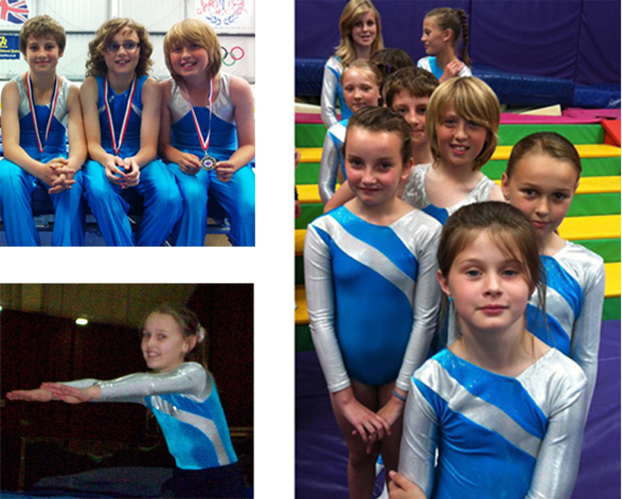

Welcome
We are a local friendly non-profit club that provides children and young people trampoline gymnastics tuition in a safe environment. The club was established in 1978 and is currently run by a team of willing and enthusiastic volunteers. All our sessions are held in the Worthing Leisure Centre.
The club offers classes for children and young people to participate in trampoline gymnastics from beginner; where children can jump for fun and learn skills safely and progressively, to competitive trampoline gymnastics beginning at Club and County level through to National Competitive events. Our members are both male and female from ages 2 to 19. Our aim is to provide for all and to offer those with talent the opportunity to develop and fulfil their potential.
Our coaches are all British Gymnastics qualified and have been screened for their suitability to work with children. Many of our coaches are from a trampolining background.
Why trampoline gymnastics? By teaching children and young people the skills required for trampoline gymnastics they are gaining improvement in their core-stability; balance and coordination. Children gain self confidence as any age or ability are able to get on and learn basic skills fairly quickly. Jumping on a trampoline is a fun way for children to improve their fitness and helps them towards their recommended amount of daily and weekly exercise. It has been said that no one can feel depressed whilst jumping on a trampoline!

Sussex Martlets Trampoline Club is affiliated to British Gymnastics.